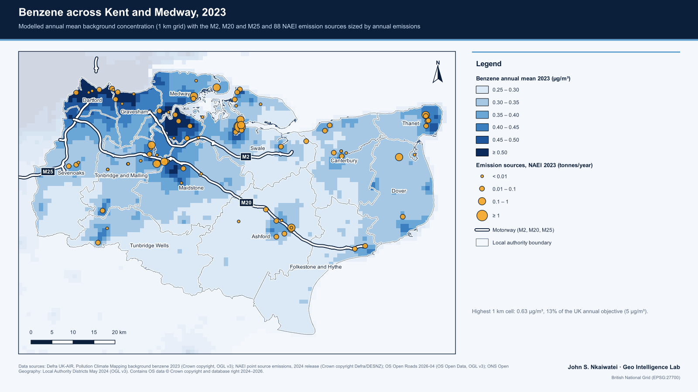

Case study
Benzene exposure in Kent and Medway, 2023
Which parts of Kent and Medway carry the most background benzene, and how many residents live there? Modelled concentrations, Census 2021 population and emission sources, combined in a rerunnable pipeline.
- Well below the limit. The highest 1 km cell reaches 0.63 µg/m³, about one-eighth of the UK annual objective of 5 µg/m³.
- The Thames side carries the burden. 337,566 residents (18.2%) live at or above 0.50 µg/m³, and 92% of them are in Medway, Dartford and Gravesham.
- Big emitters don't set the pattern. 88 sites released 12.3 tonnes in 2023, yet emission size and local concentration are almost unrelated (Spearman ρ = 0.11).
- QGIS
- Python
- Defra PCM
- Census 2021